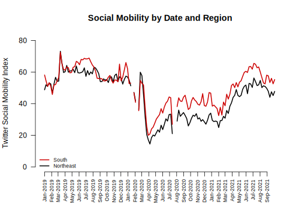
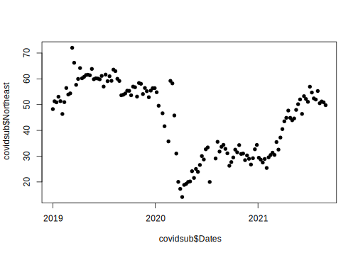
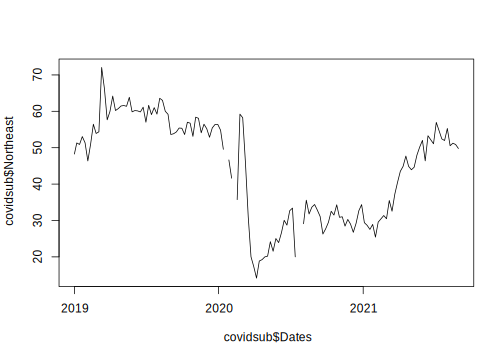
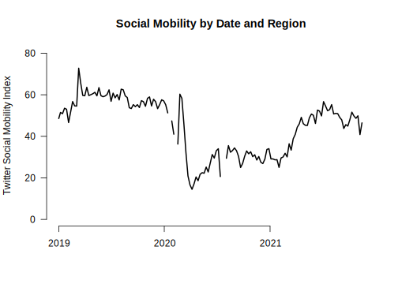
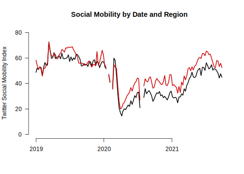
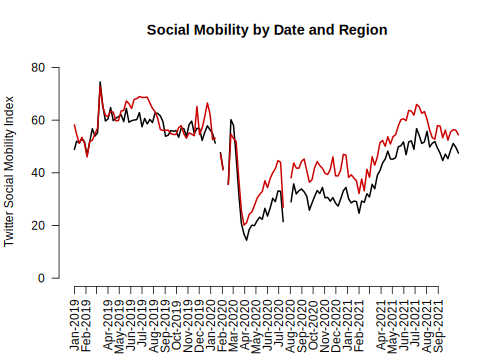
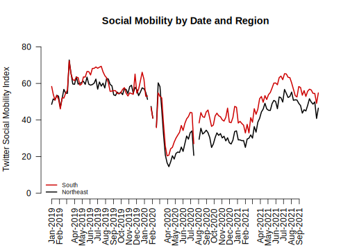

4.8 Line Plots in R
Where we are going …

Starting from the bottom …
- Let’s first create a scatterplot by providing R with our two variables
- In a trend/line plot, we want time on the x-axis, in this case the
Datescolumn - We want our outcome on the y-axis, in this case, social mobility
- Ultimately we will want to compare the Northeast with the South. We will plot one line at a time, starting with the Northeast
plot(x=covidsub$Dates,y=covidsub$Northeast, pch=16) # pch is point type
We now transform it to a line by specifying type="l"
- By default, R creates a plot with
type=pfor points. R also hastype=bwhich has both a line and points.
plot(x=covidsub$Dates,y=covidsub$Northeast,type="l") # makes it a line
Let us change the aesthetics a bit by adding labels and removing the border with bty="n".
plot(x=covid$Dates,y=covid$Northeast,
type="l",
main="Social Mobility by Date and Region",
ylab="Twitter Social Mobility Index",
xlab="",
ylim = c(0, 80), # y-axis limits
las=1, # orientation of axis labels
lwd=2, # line width
bty="n") # removes border
Let’s add a comparison line with the lines() function to look at trends for the south.
- Note that this is outside of the
plot()function, but the inputs are very similar. We supply a set of x and y coordindates.
plot(x=covid$Dates,y=covid$Northeast,
type="l", pch=15,
main="Social Mobility by Date and Region",
ylab="Twitter Social Mobility Index",
xlab="",
ylim = c(0, 80), las=1,
lwd=2,
bty="n")
## Add line to the plot
lines(x=covid$Dates,y=covid$South, col="red3", lwd=2)
Let’s create our own axis for the plot to add detail. To do this, we add xaxt to the plot function and then use axis() below the function.
plot(x=covid$Dates,y=covid$Northeast,
type="l", pch=15,
main="Social Mobility by Date and Region",
ylab="Twitter Social Mobility Index",
xlab="",
ylim = c(0, 80), las=1,
lwd=2,
bty="n",
xaxt="n") # remove original x-axis
lines(x=covid$Dates,y=covid$South, col="red3", lwd=2)
## create the numbers we want to add to the new x-axis
axisdates <- seq(as.Date("2019-01-01"), as.Date("2021-09-01"), by="month")
## add the axis the "1" means x-axis. A "2" would create a y-axis
## the format argument is unique to this date example
### "%b-%Y" are telling R to display the month and year, with the month in words
axis(1, at = axisdates, labels=format(axisdates, "%b-%Y"), las=2)
Finally, let’s add a legend(). Now we’re here!
plot(x=covid$Dates,y=covid$Northeast,
type="l", pch=15,
main="Social Mobility by Date and Region",
ylab="Twitter Social Mobility Index",
xlab="",
ylim = c(0, 80), las=1,
lwd=2,
bty="n",
xaxt="n")
lines(x=covid$Dates,y=covid$South, col="red3", lwd=2)
axisdates <- seq(as.Date("2019-01-01"), as.Date("2021-09-01"), by="month")
axis(1, at = axisdates, format(axisdates, "%b-%Y"), las=2)
## Add legend, "bottomleft" indicates where on the plot to locate it
## Could use "topright" instead, for example
legend("bottomleft", col=c("red3", "black"),
c("South", "Northeast"),
cex = .7, # size of legend
lwd=2,
bty="n")